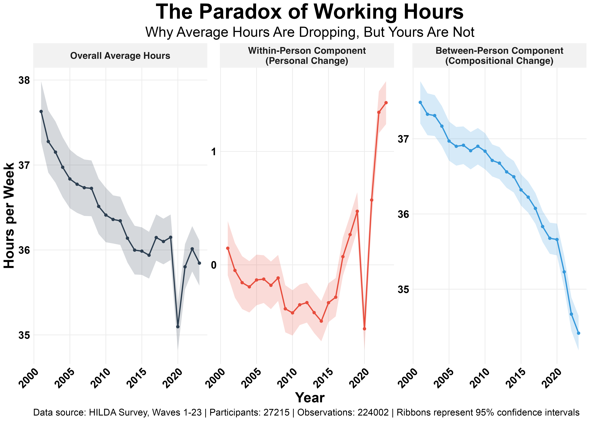

The average Australian has gone from working 37.5 hours a week in 2001 to 34.4 in 2023 — a drop of over 3 hours. My post last week broke down these trends at the population level.
On the surface, this looks like we're all embracing a better work-life balance. But is that what's really happening?
A drop in the average can be caused by two very different things:
1) A "within-person" trend: Individuals are genuinely reducing their hours over their careers, reflecting true change at a personal level.
2) A "compositional" shift: This is a "between-person" change, where the types of workers are actually changing. For example, older generations who worked long hours are retiring and being replaced by newer generations who (on average) work fewer hours.
So which is it? Are individuals genuinely working less or is the workforce just changing? We used a hierarchical Bayesian model on more than two decades of data from the HILDA survey to tease these two explanations apart.
Here's what the results show (shown in the figure below):
- The National Average is Down: This is still true. The shift from a 37.5-hour to a 34.4-hour average work week is very real.
- It's (Almost) All Compositional Change: The 3.1-hour drop is almost entirely driven by a shift in the workforce. New generations entering the labour market tend to work fewer hours on average over their careers than those who are leaving it.
- The Paradox: Individuals Are Working More: When we isolated the "within-person" trend by comparing each person's hours to their own baseline, we found that individuals are not systematically reducing their hours over their careers. In fact, our model estimates that the average employee's working hours have slightly increased over the last 25 years, by about 19 minutes per year. And this increase has accelerated over the last 10 years.

So the national average is going down because the types of jobs and workers are changing. But for the average individual, the workload is slowly creeping up. This is a classic Simpson's Paradox. The workforce as a whole works less, even if most of us individually are not.